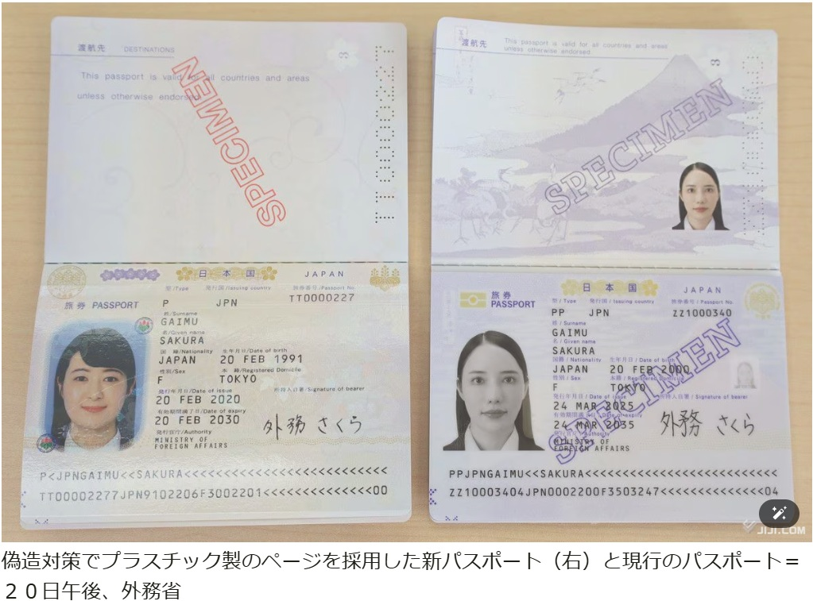
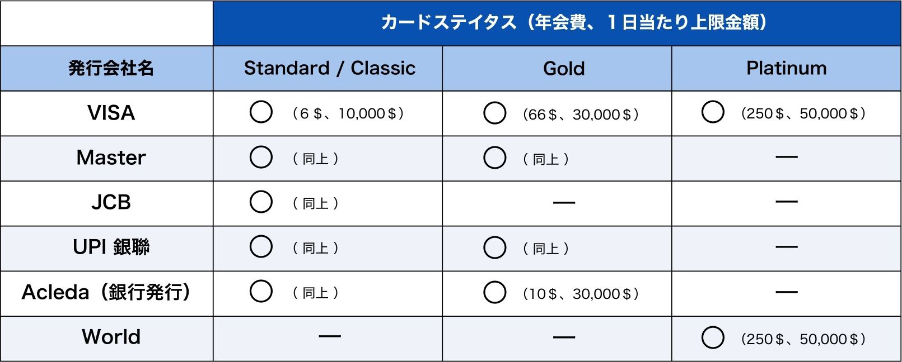

Q1：開設可能な通貨の種類は何ですか？
A1：ドルが基準となっております。その他には、現地通貨のクメールリエルや隣国タイのバーツも追加選択していただけます。
Q2：口座開設の手続き完了には何日かかりますか？
A2：約１０営業日です。必要書類を受け取り次第、カンボジア側での手続きに入ります。
口座番号（約５営業日）＋デビットカード発行（約５営業日）の合計で約１０営業日となります。
Q3：口座開設のために必要な手続きは何ですか？
A3：四ステップで口座開設手続きを行えます。
一 お客様情報をGoogle Formに入力
二 口座開設申込書類への記入
三 公証役場での認証手続き
四 申込書類一式の郵送
Q4：書類郵送先の株式会社ＭＥＴＩＳはどのような会社ですか？
A4：日本とカンボジアでの輸送サービスを行っている会社です。
詳細はこちら
Q5：Internet Banking のログインIDに利用する文字の縛りはありますか？
A5：８文字以上・大文字小文字記号数字の組み合わせ
Q6：モバイルアプリは利用した方がいいですか？
A6：携帯で簡単に操作ができるため、お勧めしております。
ダウンロードについてのサポートは、口座開設書類一式がお手元に到着した際にご案内いたします。
参考URL：アプリのダウンロード
Q7：公証役場での手続きは何をすればよろしいでしょうか？
A7："私署証書の認証" と "アポスティーユ認証" という２つの手続きです。
- 私署証書の認証：口座申込書類のサインが自分のものであることを証明
- アポスティーユ認証：上記認証済み書類が国外でも有効となる証明
Q8：上記の認証手続きを公証役場で対応ができませんでした。どうすればいいですか？
A8：下記の都道府県以外の公証役場でのお手続きは、私署証書の認証のみとなります。
お申込み時にご連絡いただいた公証役場が下記以外に変更になった場合には、手続きが異なりますので LINE オフィシャル にご連絡ください。
※対象：東京都、神奈川県、静岡県、愛知県、大阪府、宮城県、福岡県、北海道（札幌市）
Q9：パスポートはどのページを印刷すればいいですか？
A9：新旧どちらのパスポートも、顔写真が載っている見開き部分２ページ分の印刷をお願いします。

Q10：カードの年会費がわかりにくいので、一覧で教えてください。
A10：下記の表をご覧ください。
※アクレダ銀行が発行するゴールドカードの年会費がお得です。

Q11：お金の出金はどこで行えばいいですか？
A11：日本を含め、どの国のATMからでもお引出は可能です。
Q12：アクレダ銀行からの海外送金の上限額を知りたいです。
A12：上限金額無しで送金いただけます。
ただし、送金金額が大きい場合は、送金目的が明確な書類（例：インボイスや契約書等）の提出が必要です。
Q13：Term depositとは、何ですか？
A13：定期預金（最低預入金100㌦～）の事になります。以下の３種類の定期預金をご選択いただけます。
・ハイグロース定期預金
(期間：１ヶ月～12ヶ月、18ヶ月、24ヶ月)
満期時に元本と一緒に支払われるプレミアム金利が適用されます。
・ハイ・インカム定期預金
(期間：１ヶ月～12ヶ月、18ヶ月、24ヶ月)
満期時に元本が支払われる一方で、毎月利息が支払われます。
・長期預金
(期間：３年、４年、５年以上)
満期時に元本が支払われる一方で、3ヵ月ごとに利息が支払われます。
Q14：最低の預入金額についての注意点はございますか？
A14：ご利用される預金口座の種目によって異なります。
普通預金：なし
定期預金：100㌦
※普通預金の口座開設にあたり、カードの初年度会費と50ドルの最低お預け入れをお願いしております。
Q15：定期預金の金利について教えてください。
A15：各定期預金の種類による金利は下記のサイトをご覧ください。
https://www.acledabank.com.kh/kh/eng/ps_defixeddeposit?t=p
ハイグロース定期預金＝Hi-Growth
ハイ・インカム定期預金＝Hi-Income
長期預金＝Long Term
の項目をご参照ください.
Q16：毎月積み立てというのは可能でしょうか？
A16：積立て預金というのはございません。積立て形式を希望される場合は、定期預金を都度作成していただく形となります.
Q17：アクレダのWebページで見たSecurities Accountというのは何ですか？
A17：証券口座となります。アクレダ銀行とアクレダ証券は自由に送受金できるインフラを整えております。上場証券情報に関しては以下のリンクをご参照ください。
https://csx.com.kh/en
参考情報：現在メイン市場に９社、グロース市場に２社、債券市場に１３銘柄上場しております.
Q18：質問があった場合はどうすればいいですか？
A18：LINE オフィシャル にてお気軽にお問い合わせください。営業時間内にご返信いたします.
Q19：よくわからないメールが銀行から来ました、どうすればいいでしょうか？
A19：LINE オフィシャルをご利用ください。いつでもご連絡お待ちしております.